第3章 · 原课件与完整中文翻译
上方为英文原页，下方为对应的完整中文翻译，标题、正文、图内文字和公式按原页顺序排列。
页号按PDF顺序。原课件的历史日期、学期、课堂安排和研究结论按原文保留；相关概念与适用条件见教程正文。符号、代码、作者姓名及便于检索的专有名称保留原文。
Lecture 03 · 44页
Lecture 03 · PDF p1
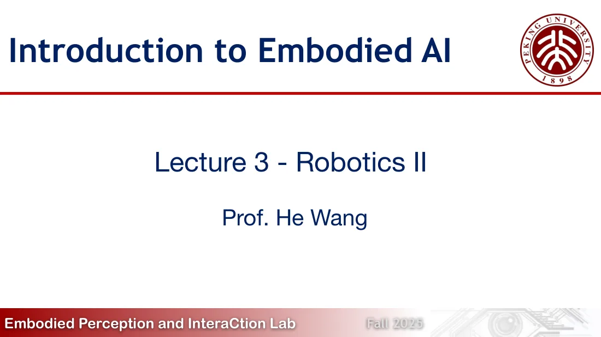
第3讲：机器人学 II
王鹤教授
北京大学（1898年）
具身感知与交互实验室（EPIC）
2025年秋季
Lecture 03 · PDF p2
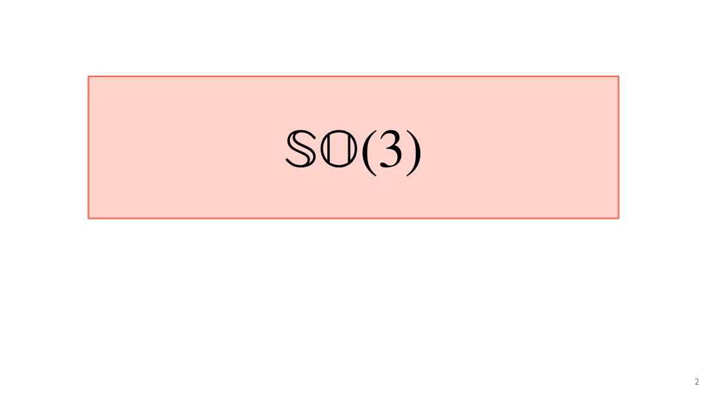
Lecture 03 · PDF p3
Lecture 03 · PDF p4
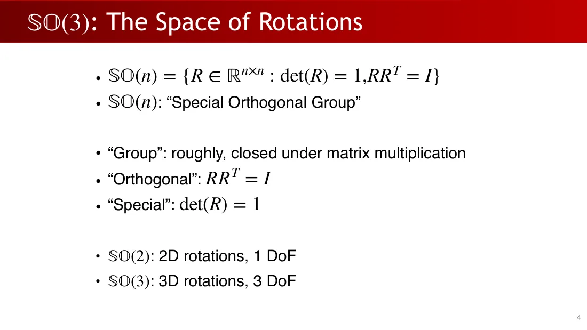
- \[\mathrm{SO}(n) = \{R \in \mathbb{R}^{n\times n} : \operatorname{det}(R) = 1\text{，}RR^{T} = I\}\]
- \(\mathrm{SO}(n)\)：“特殊正交群”。
- “群”：粗略地说，对矩阵乘法封闭。
- “正交”：\(RR^{T} = I\)。
- “特殊”：\(\operatorname{det}(R) = 1\)。
- \(\mathrm{SO}(2)\)：二维旋转，1个自由度。
- \(\mathrm{SO}(3)\)：三维旋转，3个自由度。
Lecture 03 · PDF p5
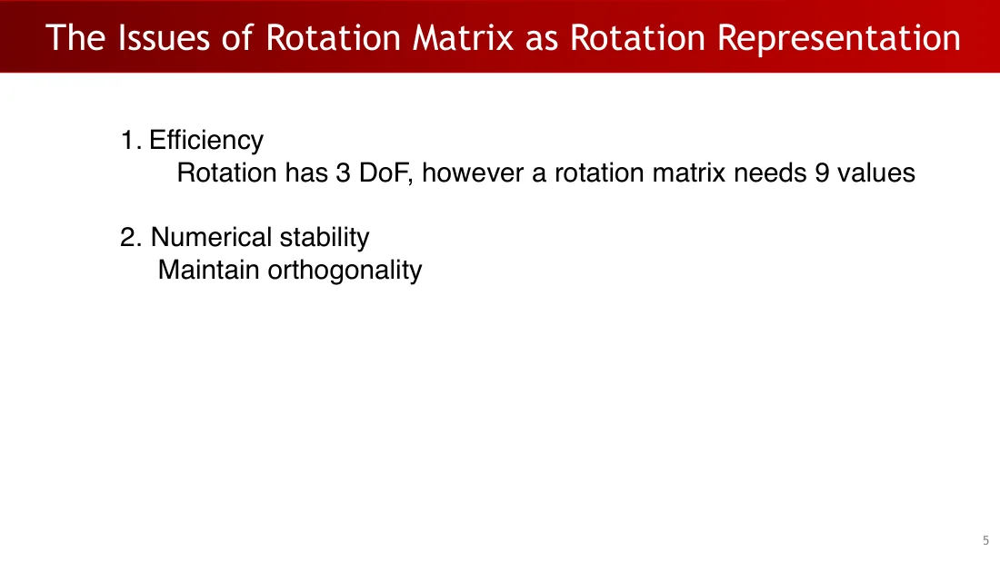
1. 效率：旋转有3个自由度，但旋转矩阵需要9个数值。
2. 数值稳定性：保持正交性。
Lecture 03 · PDF p6
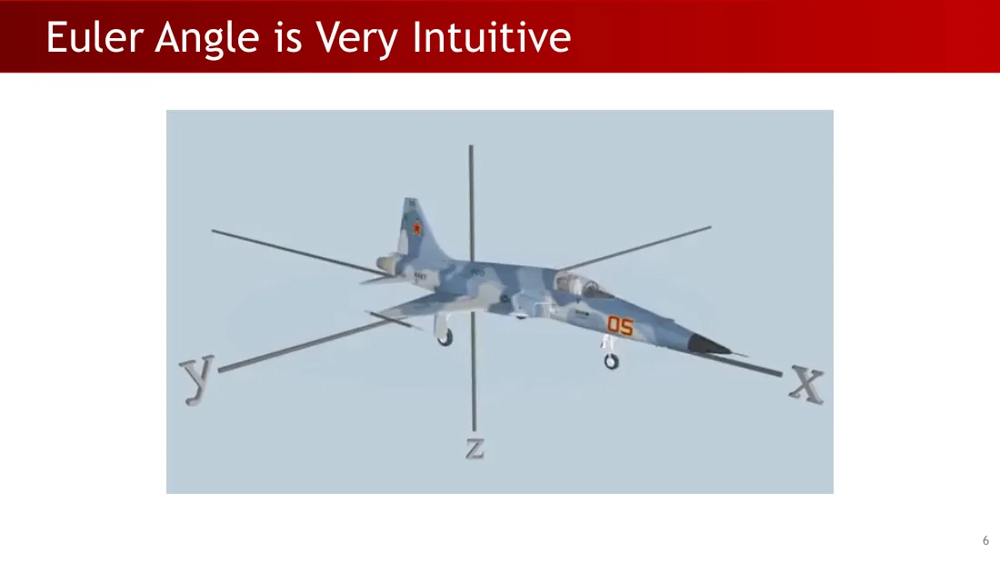
坐标轴：x、y、z。
Lecture 03 · PDF p7
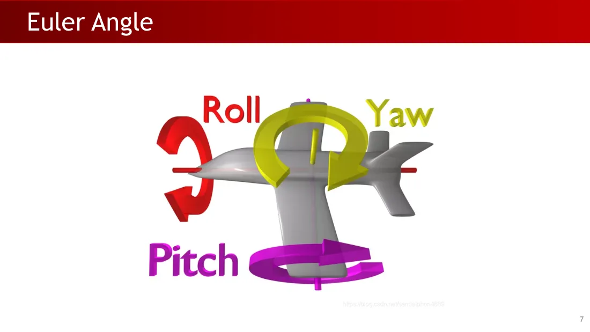
横滚（Roll）；偏航（Yaw）；俯仰（Pitch）。
https://blog.csdn.net/sandalphon4869
Lecture 03 · PDF p8
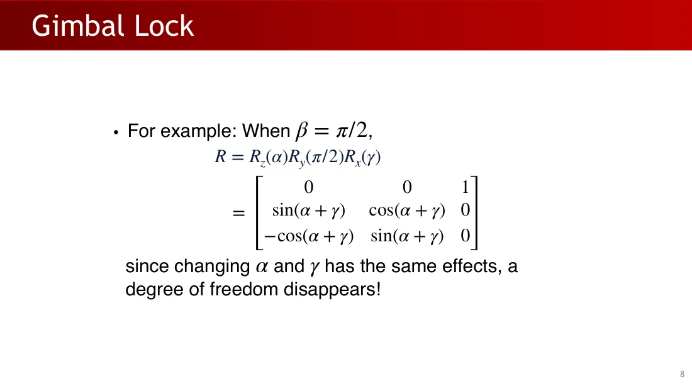
- 例如，当 \(\beta = \frac{\pi}{2}\) 时，
\[R = R_z(\alpha )R_y(\frac{\pi}{2})R_x(\gamma )\]
\[= \begin{bmatrix}0 & 0 & 1 \\ \sin(\alpha +\gamma ) & \cos(\alpha +\gamma ) & 0 \\ -\cos(\alpha +\gamma ) & \sin(\alpha +\gamma ) & 0\end{bmatrix}\]
因为改变 \(\alpha\) 和 \(\gamma\) 会产生相同的效果，所以一个自由度消失了！
Lecture 03 · PDF p9
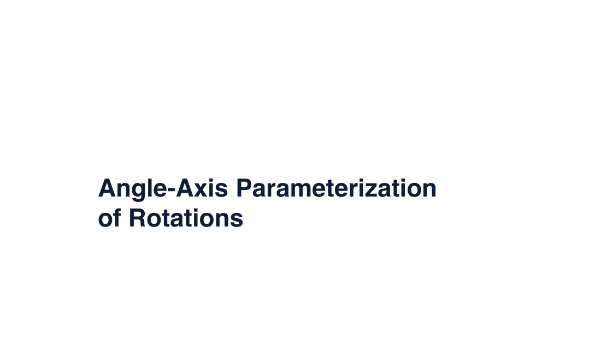
Lecture 03 · PDF p10
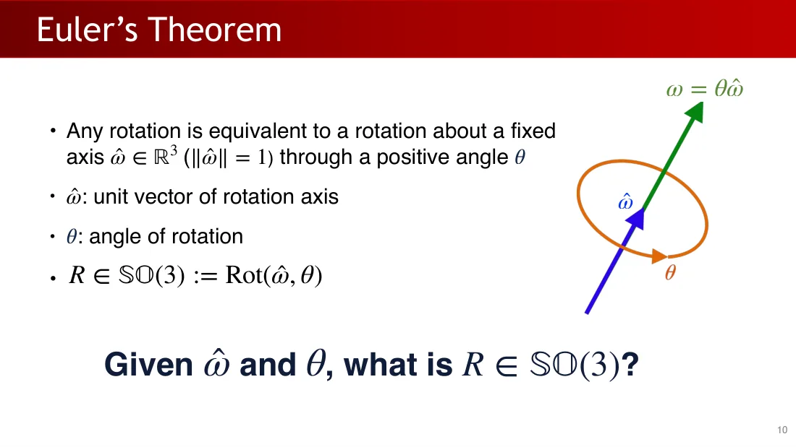
- 任意旋转都等价于绕一条固定轴 \(\hat{\omega } \in \mathbb{R}^{3}\)（\(\lVert \hat{\omega }\rVert = 1\)）转过正角度 \(\theta\)。
- \(\hat{\omega }\)：旋转轴的单位向量。
- \(\theta\)：旋转角度。
- \[R \in \mathrm{SO}(3) := \operatorname{Rot}(\hat{\omega }, \theta )\]
图中：\(\omega = \theta \hat{\omega }\)。
给定 \(\hat{\omega }\) 和 \(\theta\text{，}R \in \mathrm{SO}(3)\) 是什么？
Lecture 03 · PDF p11
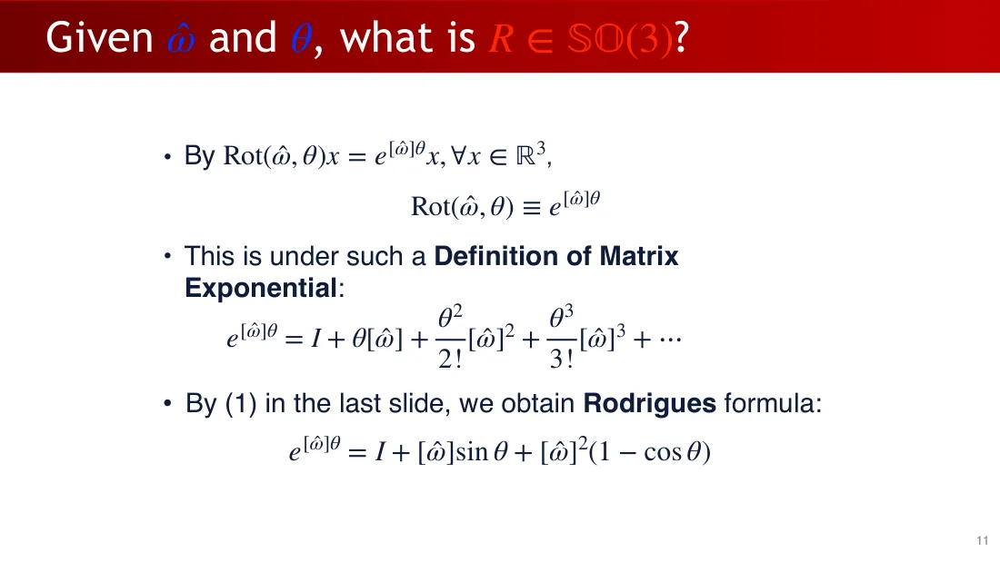
- 由 \(\operatorname{Rot}(\hat{\omega }, \theta )x = \exp(\theta [\hat{\omega }]) x\)，对所有 \(x \in \mathbb{R}^{3}\)，得 \(\operatorname{Rot}(\hat{\omega }, \theta ) \equiv \exp(\theta [\hat{\omega }])\)。
- 这里采用如下矩阵指数定义：
\[\exp(\theta [\hat{\omega }]) = I + \theta [\hat{\omega }] + (\frac{\theta ^{2}}{2!})[\hat{\omega }]^{2} + (\frac{\theta ^{3}}{3!})[\hat{\omega }]^{3} + \cdots\]
- 根据上一张幻灯片的式(1)，得到 Rodrigues 公式：
\[\exp(\theta [\hat{\omega }]) = I + [\hat{\omega }]\sin \theta + [\hat{\omega }]^{2}(1 - \cos \theta )\]
Lecture 03 · PDF p12
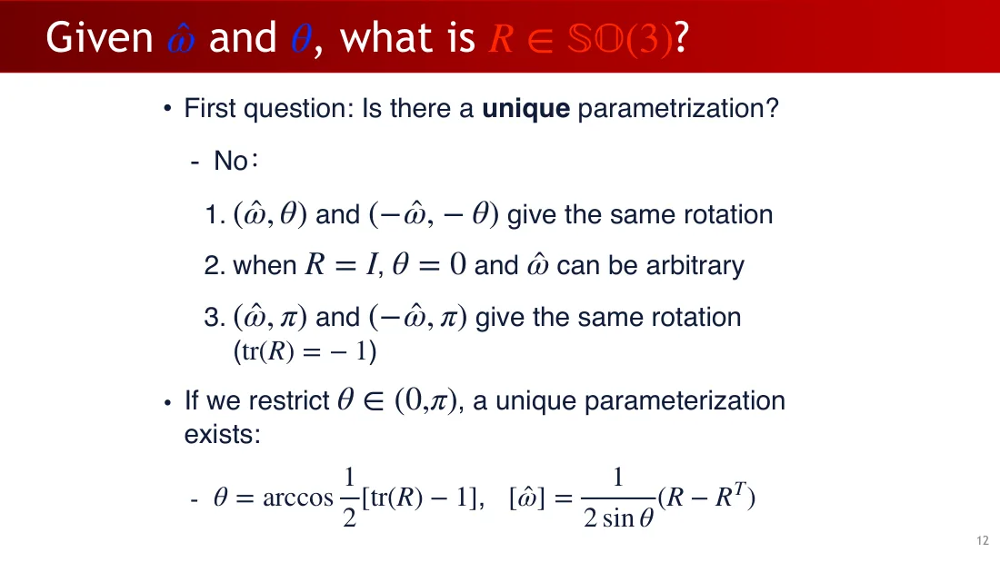
- 第一个问题：存在唯一的参数化吗？
- 不存在：
1. \((\hat{\omega }, \theta )\) 与 \((-\hat{\omega }, -\theta )\) 给出相同的旋转。
2. 当 \(R = I\) 时，\(\theta = 0\text{，}\hat{\omega }\) 可以任取。
3. \((\hat{\omega }, \pi )\) 与 \((-\hat{\omega }, \pi )\) 给出相同的旋转（\(\operatorname{tr}(R) = -1\)）。
- 如果限定 \(\theta \in (0, \pi )\)，则存在唯一的参数化：
- \[\theta = \arccos(\frac{\operatorname{tr}(R)-1}{2})\text{，}[\hat{\omega }] = \frac{R-R^{T}}{2\sin \theta }\]
Lecture 03 · PDF p13
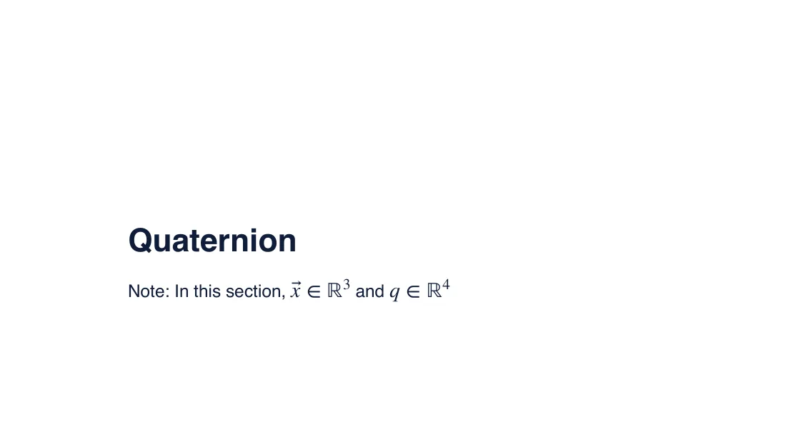
注意：本节中，向量 \(\vec{x} \in \mathbb{R}^{3}\)，四元数 \(q \in \mathbb{R}^{4}\)。
Lecture 03 · PDF p14
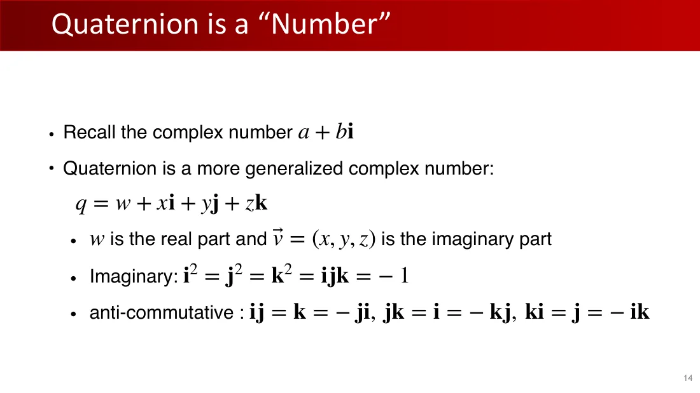
- 回顾复数 \(a + bi\)。
- 四元数是复数更广义的推广：\(q = w + xi + yj + zk\)。
- w 是实部，\(\vec{v} = (x, y, z)\) 是虚部。
- 虚数单位：\(i^{2} = j^{2} = k^{2} = ijk = -1\)。
- 反交换：\(ij = k = -ji\text{，}jk = i = -kj\text{，}ki = j = -ik\)。
Lecture 03 · PDF p15
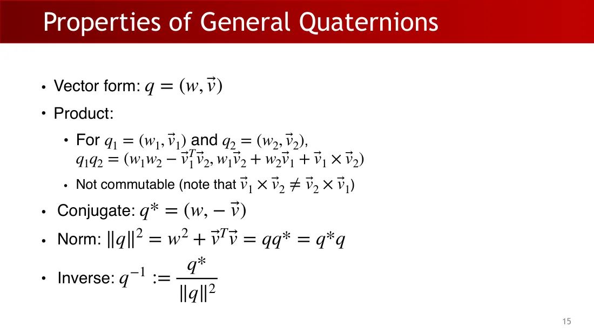
- 向量形式：\(q = (w, \vec{v})\)。
- 乘积：
- 对 \(q_{1} = (w_{1}, \vec{v}_{1})\)、\(q_{2} = (w_{2}, \vec{v}_{2})\text{，}q_{1}q_{2} = (w_{1}w_{2} - \vec{v}_{1}^{T}\vec{v}_{2}\text{，}w_{1}\vec{v}_{2} + w_{2}\vec{v}_{1} + \vec{v}_{1} \times \vec{v}_{2})\)。
- 不可交换（注意 \(\vec{v}_{1} \times \vec{v}_{2} \ne \vec{v}_{2} \times \vec{v}_{1}\)）。
- 共轭：\(q^* = (w, -\vec{v})\)。
- 范数：\(\lVert q\rVert ^{2} = w^{2} + \vec{v}^{T}\vec{v} = qq^* = q^*q\)。
- 逆：\(q^{-1} := \frac{q^*}{\lVert q\rVert^{2}}\)。
Lecture 03 · PDF p16
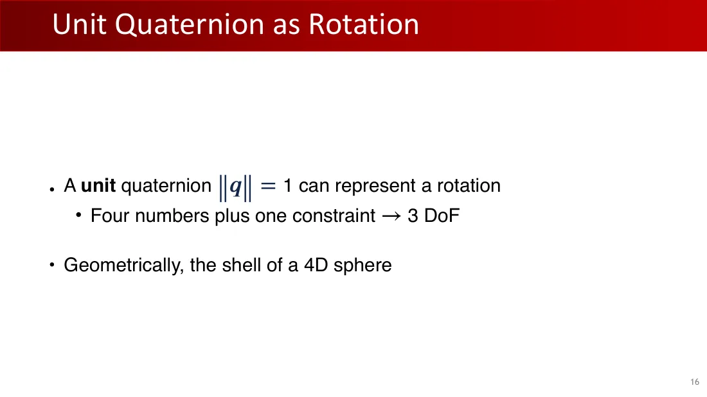
- 单位四元数 \(\lVert q\rVert = 1\) 可以表示一个旋转。
- 四个数加一个约束 → 3个自由度。
- 从几何上看，它是四维球的表面。
Lecture 03 · PDF p17
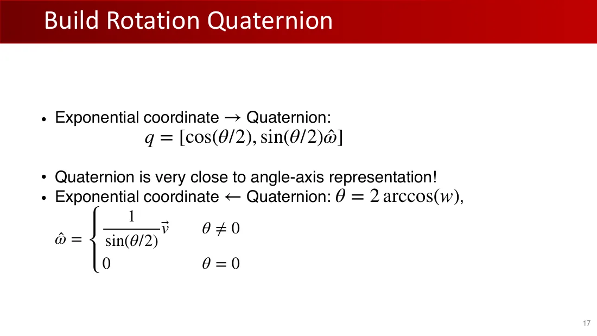
- 指数坐标 → 四元数：\(q = [\cos(\frac{\theta}{2}), \sin(\frac{\theta}{2})\hat{\omega }]\)。
- 四元数与轴角表示非常接近！
- 指数坐标 ← 四元数：\(\theta = 2 \arccos(w)\)，
\(\hat{\omega } = \frac{\vec{v}}{\sin(\frac{\theta}{2})}\)（\(\theta \ne 0\)）；\(\hat{\omega } = 0\)（\(\theta = 0\)）。
Lecture 03 · PDF p18
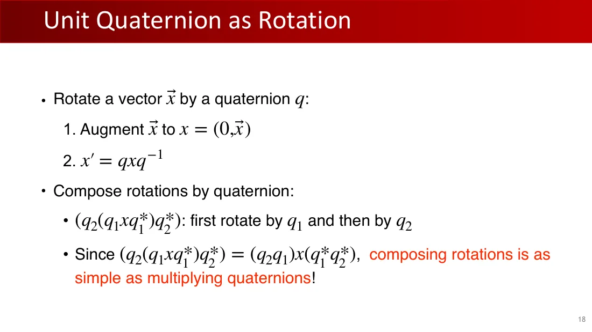
- 用四元数 q 旋转向量 \(\vec{x}\)：
1. 将 \(\vec{x}\) 扩充为 \(x = (0, \vec{x})\)。
2. \(x' = qxq^{-1}\)。
- 用四元数复合旋转：
- \(q_{2}(q_{1}xq_{1}*)q_{2}*\)：先用 \(q_{1}\) 旋转，再用 \(q_{2}\) 旋转。
- 因为 \(q_{2}(q_{1}xq_{1}*)q_{2}* = (q_{2}q_{1})x(q_{1}*q_{2}*)\)，复合旋转就像四元数相乘一样简单！
Lecture 03 · PDF p19
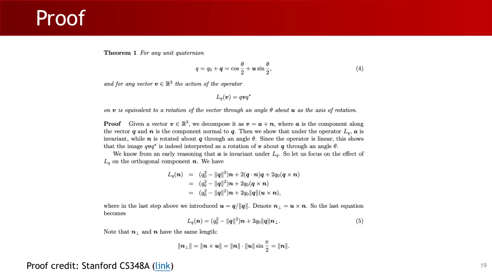
定理1：对于任意单位四元数 \(q = q_{0} + \vec{q} = \cos(\frac{\theta}{2}) + u \sin(\frac{\theta}{2})\)（4），以及任意向量 \(v \in \mathbb{R}^{3}\)，算子 \(L_q(v) = qvq^*\) 作用于 v，等价于以 u 为旋转轴将该向量旋转 \(\theta\) 角。
证明：给定向量 \(v \in \mathbb{R}^{3}\)，将其分解为 \(v = a + n\)，其中 a 是沿向量 \(\vec{q}\) 的分量，n 是垂直于 \(\vec{q}\) 的分量。接着说明在算子 \(L_q\) 的作用下，a 保持不变，n 绕 \(\vec{q}\) 旋转 \(\theta\) 角。因为该算子是线性的，这就说明像 \(qvq^*\) 确实可以解释为 v 绕 \(\vec{q}\) 旋转 \(\theta\) 角。
根据前面的推理，a 在 \(L_q\) 下保持不变。因此，关注 \(L_q\) 对正交分量 n 的作用。我们有：
\[L_q(n) = (q_{0}^{2} - \lVert \vec{q}\rVert ^{2})n + 2(\vec{q}\cdot n)\vec{q} + 2q_{0}(\vec{q} \times n)\]
\[= (q_{0}^{2} - \lVert \vec{q}\rVert ^{2})n + 2q_{0}(\vec{q} \times n)\]
\[= (q_{0}^{2} - \lVert \vec{q}\rVert ^{2})n + 2q_{0}\lVert \vec{q}\rVert (u \times n)\]
上面最后一步引入了 \(u = \frac{\vec{q}}{\lVert \vec{q}\rVert}\)。记 \(n_{\perp} = u \times n\)，于是最后一个等式变为：
\[L_q(n) = (q_{0}^{2} - \lVert \vec{q}\rVert ^{2})n + 2q_{0}\lVert \vec{q}\rVert n_{\perp}\]。（5）
注意 \(n_{\perp}\) 和 n 长度相同：\(\lVert n_{\perp}\rVert = \lVert n \times u\rVert = \lVert n\rVert \cdot \lVert u\rVert \sin(\frac{\pi}{2}) = \lVert n\rVert\)。
证明来源：斯坦福大学 CS348A（链接）。
Lecture 03 · PDF p20
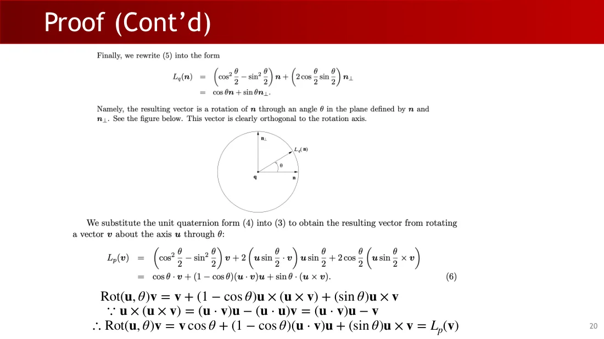
最后，将式(5)改写为：
\[L_q(n) = (\cos^{2}(\frac{\theta}{2}) - \sin^{2}(\frac{\theta}{2}))n + (2 \cos(\frac{\theta}{2}) \sin(\frac{\theta}{2}))n_{\perp}\]
\[= \cos \theta n + \sin \theta n_{\perp}\]
也就是说，得到的向量是 n 在由 n 与 \(n_{\perp}\) 定义的平面内旋转 \(\theta\) 角的结果。见下图。该向量显然与旋转轴正交。
将单位四元数形式(4)代入式(3)，得到向量 v 绕轴 u 旋转 \(\theta\) 后的向量：
\[L_p(v) = (\cos^{2}(\frac{\theta}{2}) - \sin^{2}(\frac{\theta}{2}))v + 2(u \sin(\frac{\theta}{2})\cdot v)u \sin(\frac{\theta}{2}) + 2 \cos(\frac{\theta}{2})(u \sin(\frac{\theta}{2}) \times v)\]
\[= \cos \theta \cdot v + (1 - \cos \theta )(u\cdot v)u + \sin \theta \cdot (u \times v)\]。（6）
\[\operatorname{Rot}(u, \theta )v = v + (1 - \cos \theta )u \times (u \times v) + (\sin \theta )u \times v\]
因为 \(u \times (u \times v) = (u\cdot v)u - (u\cdot u)v = (u\cdot v)u - v\)，
所以 \(\operatorname{Rot}(u, \theta )v = v \cos \theta + (1 - \cos \theta )(u\cdot v)u + (\sin \theta )u \times v = L_p(v)\)。
Lecture 03 · PDF p21
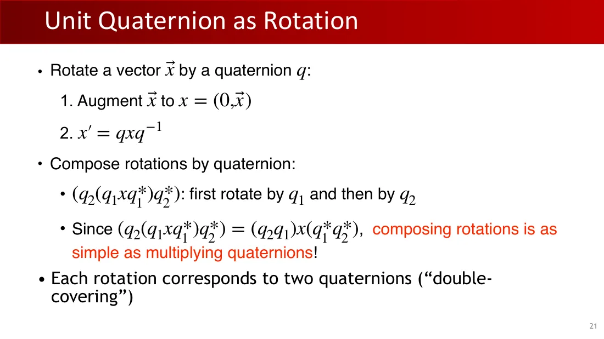
- 用四元数 q 旋转向量 \(\vec{x}\)：
1. 将 \(\vec{x}\) 扩充为 \(x = (0, \vec{x})\)。
2. \(x' = qxq^{-1}\)。
- 用四元数复合旋转：
- \(q_{2}(q_{1}xq_{1}*)q_{2}*\)：先用 \(q_{1}\) 旋转，再用 \(q_{2}\) 旋转。
- 因为 \(q_{2}(q_{1}xq_{1}*)q_{2}* = (q_{2}q_{1})x(q_{1}*q_{2}*)\)，复合旋转就像四元数相乘一样简单！
- 每个旋转对应两个四元数（“双重覆盖”）。
Lecture 03 · PDF p22
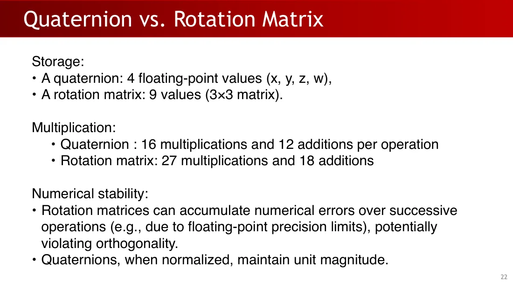
存储：
- 一个四元数：4个浮点数 (x, y, z, w)。
- 一个旋转矩阵：9个数（3×3矩阵）。
乘法：
- 四元数：每次运算16次乘法和12次加法。
- 旋转矩阵：27次乘法和18次加法。
数值稳定性：
- 旋转矩阵在连续运算中可能积累数值误差（例如浮点精度限制），从而可能破坏正交性。
- 四元数经归一化后保持单位长度。
Lecture 03 · PDF p23
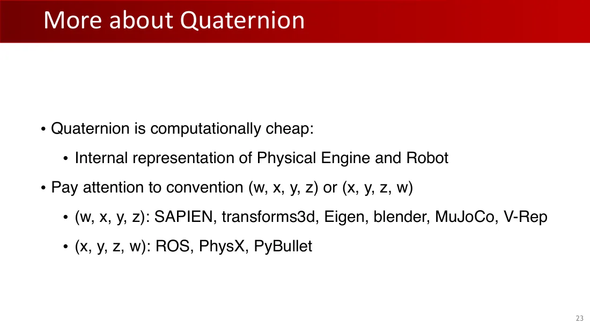
- 四元数计算成本低：
- 物理引擎和机器人中的内部表示。
- 注意分量顺序约定：(w, x, y, z) 或 (x, y, z, w)。
- (w, x, y, z)：SAPIEN、transforms3d、Eigen、Blender、MuJoCo、V-Rep。
- (x, y, z, w)：ROS、PhysX、PyBullet。
Lecture 03 · PDF p24
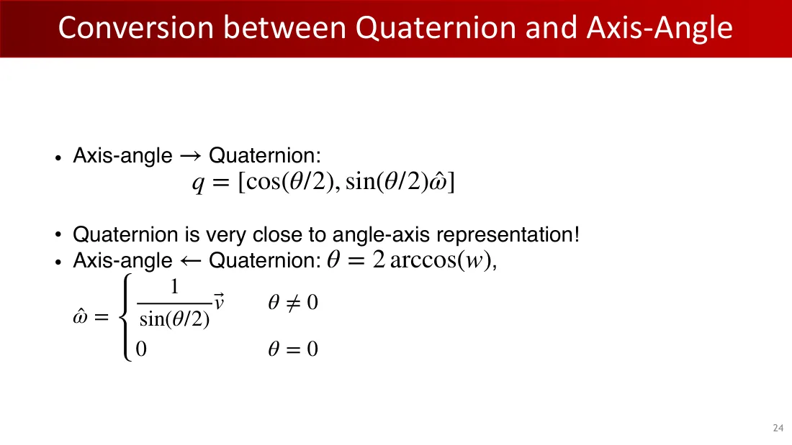
- 轴角 → 四元数：\(q = [\cos(\frac{\theta}{2}), \sin(\frac{\theta}{2})\hat{\omega }]\)。
- 四元数与轴角表示非常接近！
- 轴角 ← 四元数：\(\theta = 2 \arccos(w)\)，
\(\hat{\omega } = \frac{\vec{v}}{\sin(\frac{\theta}{2})}\)（\(\theta \ne 0\)）；\(\hat{\omega } = 0\)（\(\theta = 0\)）。
Lecture 03 · PDF p25
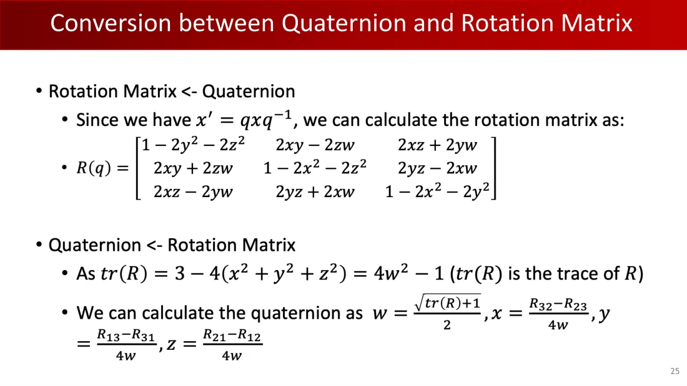
- 旋转矩阵 ← 四元数。
- 由 \(x' = qxq^{-1}\)，可以算出旋转矩阵：
- \[R(q) = \begin{bmatrix}1-2y^{2}-2z^{2} & 2xy-2zw & 2xz+2yw \\ 2xy+2zw & 1-2x^{2}-2z^{2} & 2yz-2xw \\ 2xz-2yw & 2yz+2xw & 1-2x^{2}-2y^{2}\end{bmatrix}\]
- 四元数 ← 旋转矩阵。
- 因为 \(\operatorname{tr}(R) = 3 - 4(x^{2}+y^{2}+z^{2}) = 4w^{2} - 1\)（\(\operatorname{tr}(R)\) 是 R 的迹）。
- 可以计算四元数：\(w = \frac{\sqrt{\operatorname{tr}(R)+1}}{2}\text{，}x = \frac{R_{32}-R_{23}}{4w}\text{，}y = \frac{R_{13}-R_{31}}{4w}\text{，}z = \frac{R_{21}-R_{12}}{4w}\)。
Lecture 03 · PDF p26
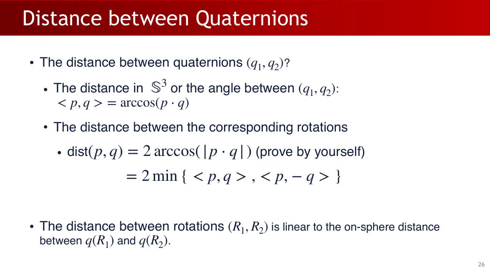
- 四元数 \((q_{1}, q_{2})\) 之间的距离？
- \[S^{3}\) 中的距离，或者 \((q_{1}, q_{2})\) 之间的夹角：\(\langle p, q\rangle = \arccos(p\cdot q)\]
- 相应旋转之间的距离：
- \[\operatorname{dist}(p, q) = 2 \arccos(|p\cdot q|)\)（请自行证明）\(= 2 \min\{\langle p, q\rangle , \langle p, -q\rangle \}\]
- 旋转 \((R_{1}, R_{2})\) 之间的距离与 \(q(R_{1})\)、\(q(R_{2})\) 之间的球面距离成线性关系。
Lecture 03 · PDF p27
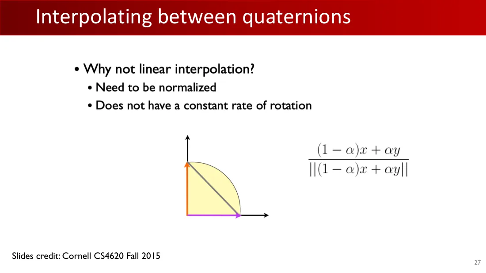
- 为什么不用线性插值？
- 需要归一化。
- 旋转速度不恒定。
\[\frac{(1-\alpha )x+\alpha y}{\lVert(1-\alpha )x+\alpha y\rVert}\]
幻灯片来源：康奈尔大学 CS4620，2015年秋季。
Lecture 03 · PDF p28
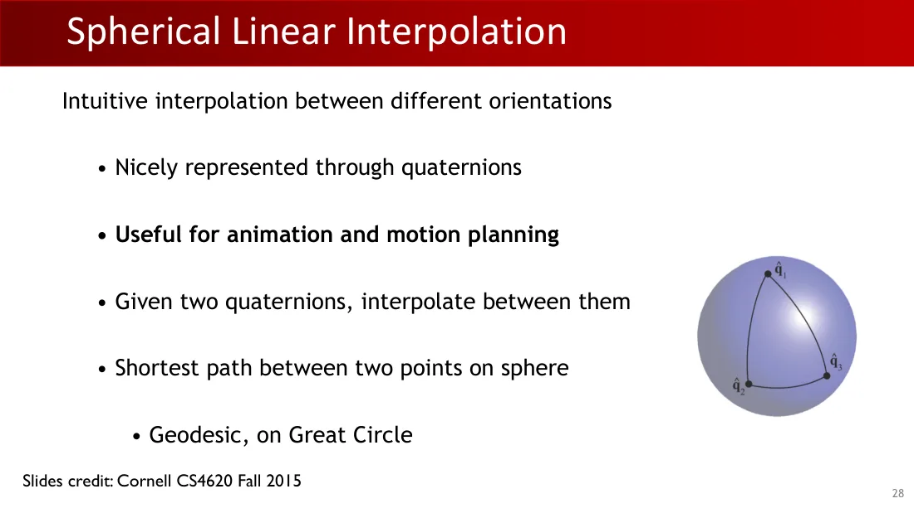
对不同朝向进行直观的插值。
- 可用四元数很好地表示。
- 对动画和运动规划很有用。
- 给定两个四元数，在它们之间插值。
- 球面两点之间的最短路径。
- 测地线，位于大圆上。
幻灯片来源：康奈尔大学 CS4620，2015年秋季。
Lecture 03 · PDF p29
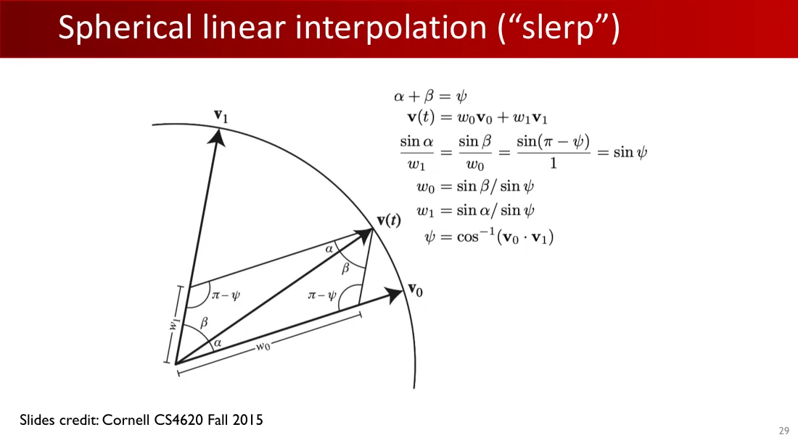
\[\alpha + \beta = \psi\]
\[v(t) = w_{0}v_{0} + w_{1}v_{1}\]
\[\frac{\sin \alpha }{w_{1}} = \frac{\sin \beta }{w_{0}} = \frac{\sin(\pi -\psi )}{1} = \sin \psi\]
\[w_{0} = \frac{\sin \beta }{\sin \psi }\text{；}w_{1} = \frac{\sin \alpha }{\sin \psi }\text{；}\psi = \cos^{-1}(v_{0}\cdot v_{1})\]
图中标记：\(v_{0}\)、\(v_{1}\)、v(t)、\(w_{0}\)、\(w_{1}\)、\(\alpha\)、\(\beta\)、\(\pi -\psi\)。
幻灯片来源：康奈尔大学 CS4620，2015年秋季。
Lecture 03 · PDF p30
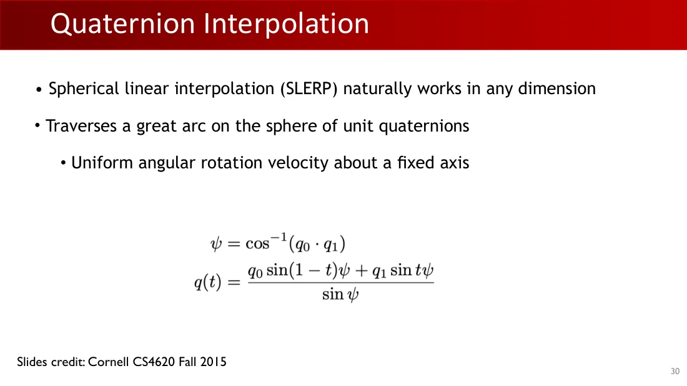
- 球面线性插值（SLERP）天然适用于任意维度。
- 沿单位四元数球面上的大圆弧运动。
- 绕固定轴以恒定角速度旋转。
\[\psi = \cos^{-1}(q_{0}\cdot q_{1})\text{，}q(t) = \frac{q_{0}\sin((1-t)\psi )+q_{1}\sin(t\psi )}{\sin \psi }\]
幻灯片来源：康奈尔大学 CS4620，2015年秋季。
Lecture 03 · PDF p31
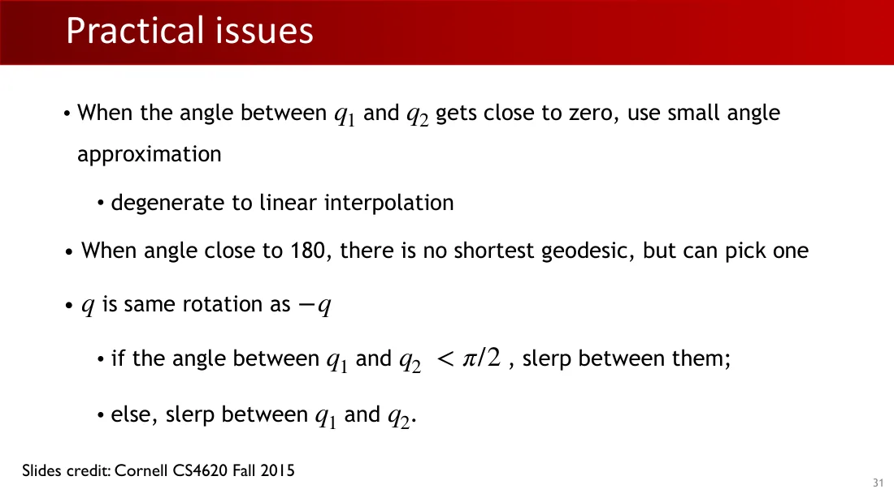
- 当 \(q_{1}\) 与 \(q_{2}\) 的夹角接近零时，使用小角近似。
- 退化为线性插值。
- 当夹角接近180度时，不存在最短测地线，但可以选择一条。
- q 与 −q 表示同一个旋转。
- 如果 \(q_{1}\)、\(q_{2}\) 夹角 \(< \frac{\pi}{2}\)，则在两者之间做 Slerp；
- 否则，在 \(q_{1}\)、\(q_{2}\) 之间做 Slerp。
幻灯片来源：康奈尔大学 CS4620，2015年秋季。
Lecture 03 · PDF p32
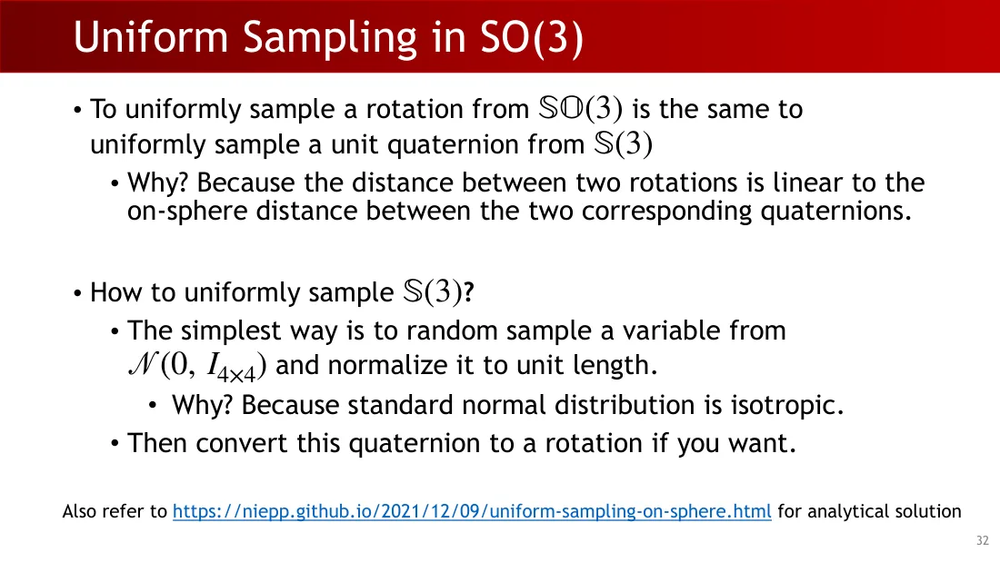
- 从 \(\mathrm{SO}(3)\) 中均匀采样一个旋转，等价于从 \(S(3)\) 中均匀采样一个单位四元数。
- 为什么？因为两个旋转之间的距离与相应两个四元数的球面距离成线性关系。
- 如何均匀采样 \(S(3)\)？
- 最简单的方法是从 \(N(0, I_{4\times 4})\) 中随机采样一个变量，然后将其归一化为单位长度。
- 为什么？因为标准正态分布具有各向同性。
- 如果需要，再将这个四元数转换为旋转。
- 最简单的方法是从 \(N(0, I_{4\times 4})\) 中随机采样一个变量，然后将其归一化为单位长度。
解析解还可参考：https://niepp.github.io/2021/12/09/uniform-sampling-on-sphere.html 。
Lecture 03 · PDF p33
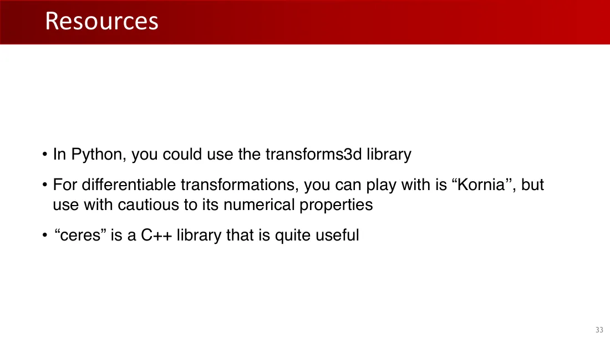
- 在 Python 中，可以使用 transforms3d 库。
- 对于可微变换，可以尝试 Kornia，但使用时要注意它的数值性质。
- Ceres 是一个相当有用的 \(C++\) 库。
Lecture 03 · PDF p34
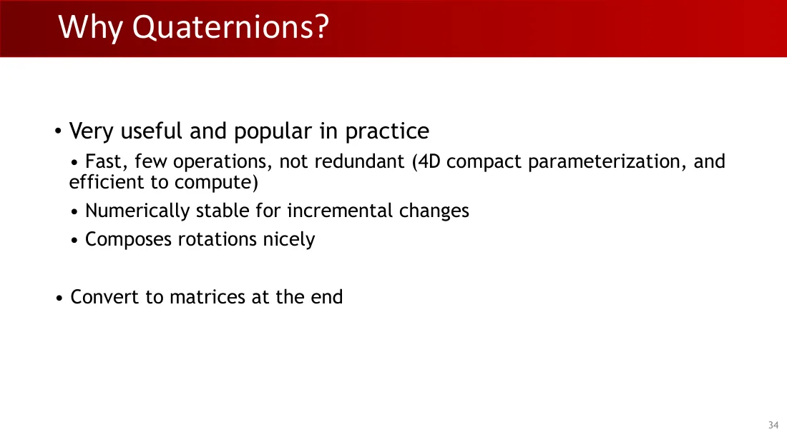
- 在实践中非常有用，而且应用广泛。
- 速度快，运算少，没有冗余（四维紧凑参数化，计算高效）。
- 对增量变化具有数值稳定性。
- 能很好地复合旋转。
- 最后再转换为矩阵。
Lecture 03 · PDF p35
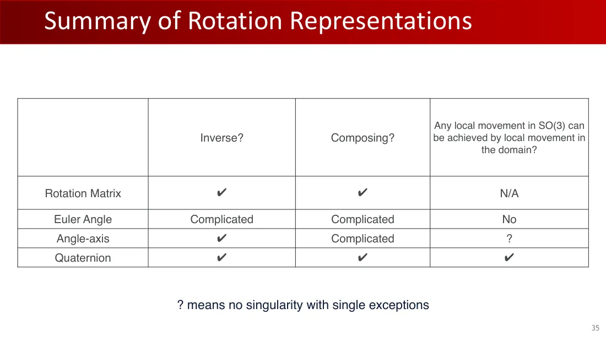
| 表示 | 求逆？ | 复合？ | \(\mathrm{SO}(3)\) 中任意局部移动能否由参数域中的局部移动实现？ |
|---|---|---|---|
| 旋转矩阵 | ✓ | ✓ | 不适用 |
| 欧拉角 | 复杂 | 复杂 | 不能 |
| 轴角 | ✓ | 复杂 | ？ |
| 四元数 | ✓ | ✓ | ✓ |
“？”表示没有奇异性，但存在个别例外。
Lecture 03 · PDF p36
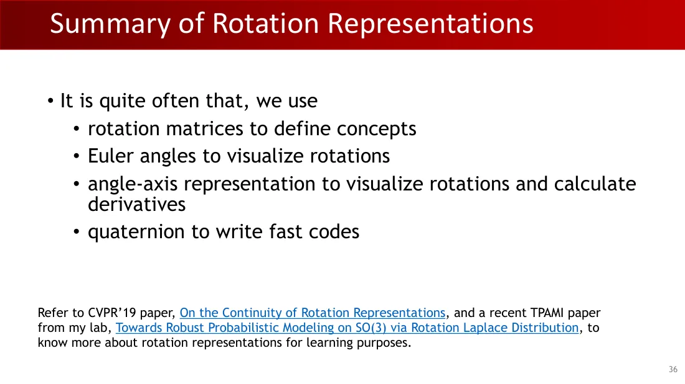
- 我们经常使用：
- 旋转矩阵来定义概念。
- 欧拉角来直观表示旋转。
- 轴角表示来直观表示旋转并计算导数。
- 四元数来编写运行速度快的代码。
若要进一步了解学习任务中的旋转表示，可参考 CVPR 2019 论文《旋转表示的连续性》（On the Continuity of Rotation Representations），以及本实验室近期的 TPAMI 论文《通过旋转拉普拉斯分布实现 \(\mathrm{SO}(3)\) 上的稳健概率建模》（\(Towards Robust Probabilistic Modeling on \mathrm{SO}(3) via Rotation Laplace Distribution\)）。
Lecture 03 · PDF p37
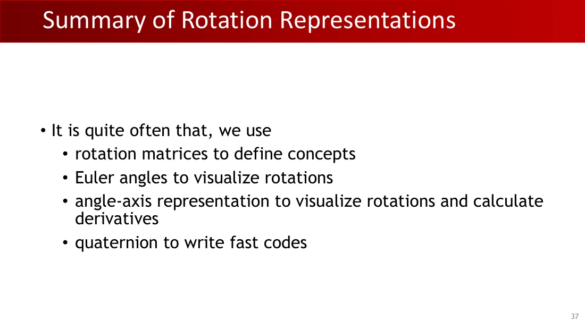
- 我们经常使用：
- 旋转矩阵来定义概念。
- 欧拉角来直观表示旋转。
- 轴角表示来直观表示旋转并计算导数。
- 四元数来编写运行速度快的代码。
Lecture 03 · PDF p38
Lecture 03 · PDF p39
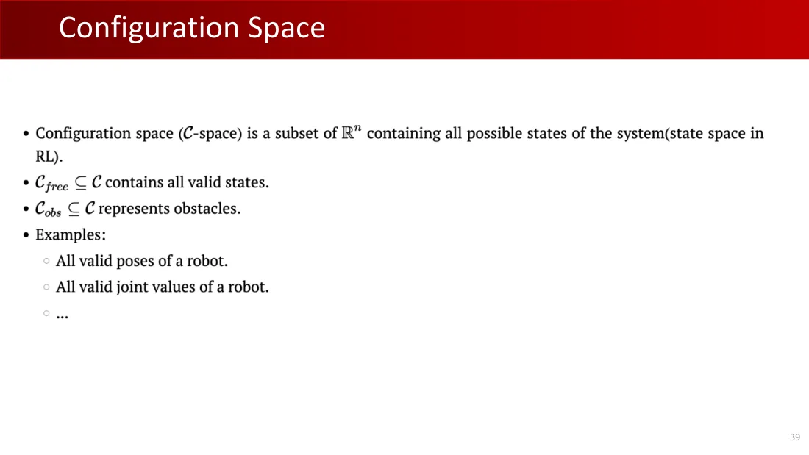
- 配置空间（C 空间）是 \(\mathbb{R}^{n}\) 的一个子集，包含系统的所有可能状态（强化学习中的状态空间）。
- \(C_{\mathrm{free}} \subseteq C\) 包含所有有效状态。
- \(C_{\mathrm{obs}} \subseteq C\) 表示障碍物。
- 例子：
- 机器人的所有有效位姿。
- 机器人的所有有效关节取值。
- ……
Lecture 03 · PDF p40
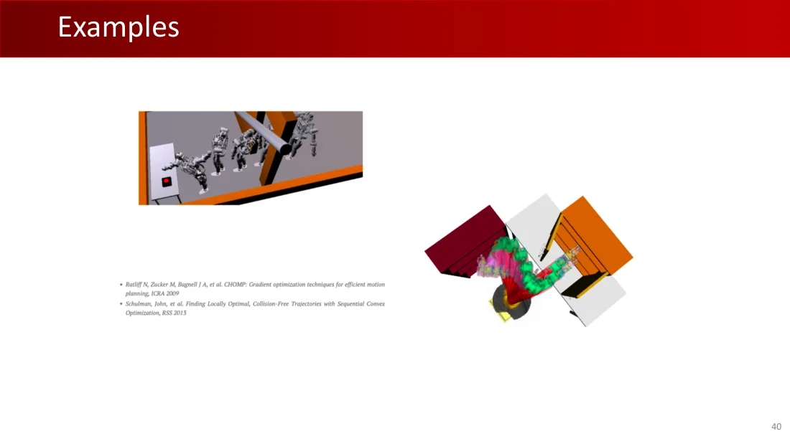
- Ratliff N、Zucker M、Bagnell J A 等：《CHOMP：高效运动规划的梯度优化技术》（CHOMP: Gradient optimization techniques for efficient motion planning），ICRA 2009。
- Schulman, John 等：《使用序列凸优化寻找局部最优的无碰撞轨迹》（Finding Locally Optimal, Collision-Free Trajectories with Sequential Convex Optimization），RSS 2013。
Lecture 03 · PDF p41
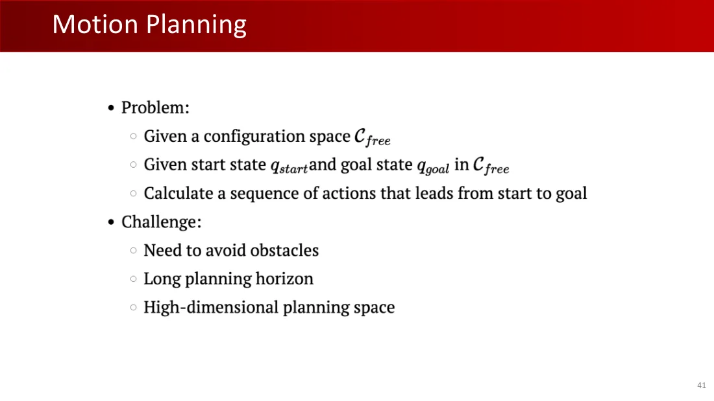
- 问题：
- 给定配置空间 \(C_{\mathrm{free}}\)。
- 给定 \(C_{\mathrm{free}}\) 中的起始状态 \(q_{\mathrm{start}}\) 和目标状态 \(q_{\mathrm{goal}}\)。
- 计算从起始状态到目标状态的一系列动作。
- 挑战：
- 需要避开障碍物。
- 规划时域长。
- 规划空间维度高。
Lecture 03 · PDF p42
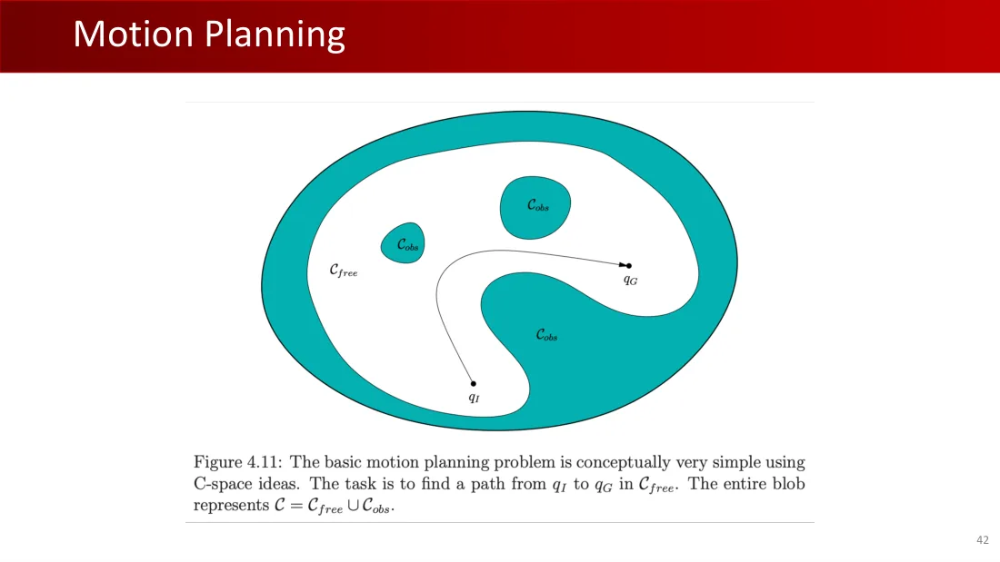
图4.11：使用 C 空间的思想，基本运动规划问题在概念上非常简单。任务是在 \(C_{\mathrm{free}}\) 中寻找从 \(q_I\) 到 \(q_G\) 的路径。整个区域表示 \(C = C_{\mathrm{free}} \cup C_{\mathrm{obs}}\)。
图中标记：\(C_{\mathrm{free}}\) 为自由配置空间；\(C_{\mathrm{obs}}\) 为障碍配置空间；\(q_I\) 为起始配置；\(q_G\) 为目标配置。
Lecture 03 · PDF p43
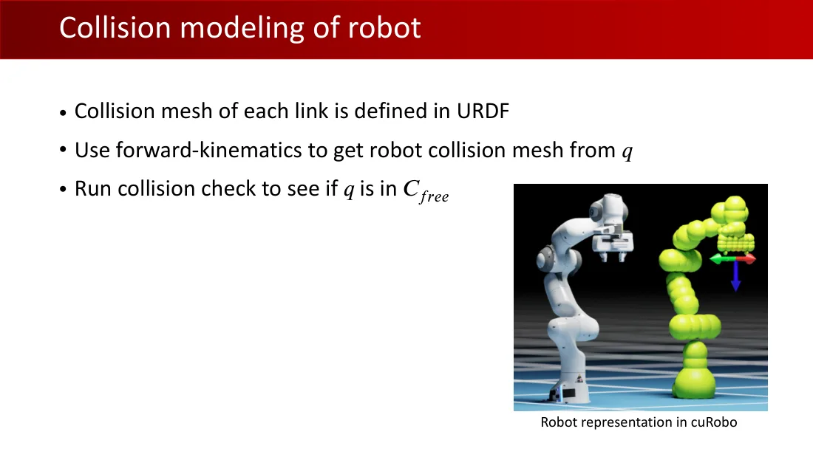
- 各连杆的碰撞网格在 URDF 中定义。
- 利用正向运动学，根据 q 得到机器人的碰撞网格。
- 运行碰撞检测，判断 q 是否属于 \(C_{\mathrm{free}}\)。
cuRobo 中的机器人表示。
Lecture 03 · PDF p44
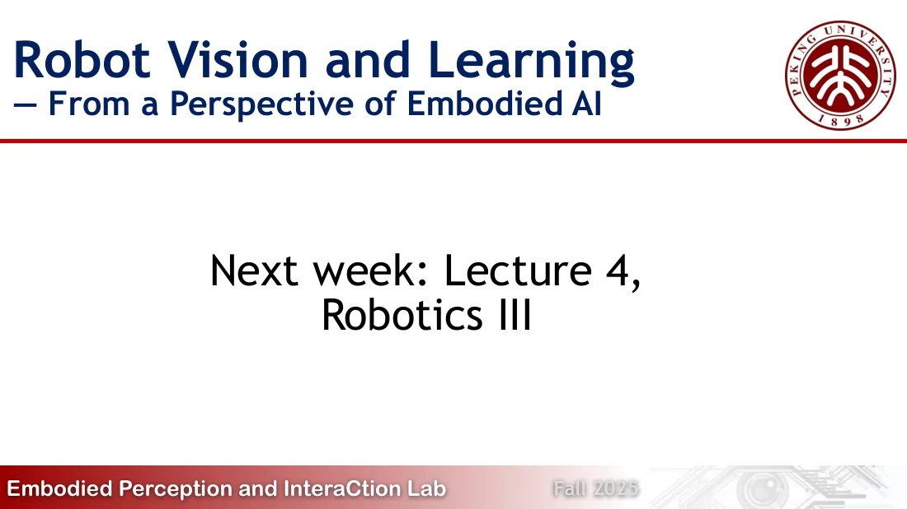
下周：第4讲，机器人学 III。
北京大学（1898年）
具身感知与交互实验室（EPIC）
2025年秋季